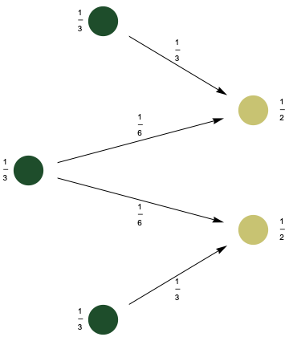

class: center, middle, titlepage count: false # Analytic Formulas for Persistent Homology ## Joshua Mirth ### MSU TDA Seminar, October 05, 2020 --- # Motivation: .fiftyfiftyleft[ .center[ Figure: points sampled from a circle. ] ] .fiftyfiftyright[ .center[ <img src="circle_R4_barcodes.png" width=80% height=80% /> Figure: the corresponding persistence barcodes. ] ] --- # Motivation Consider the case of a Čech filtration: * Classical theorems say that the homology of the Čech complex of a _good cover_ is isomorphic to singular homology. * The Čech filtration constructs a cover of the sample space through `\(\epsilon\)` balls around the data set. * When `\(\epsilon\)` is small, this is not a cover of the circle. * When `\(\epsilon\)` is too large, this is not a _good_ cover. **Question:** Given a space X and method `\(F\)`, of getting a filtered space `\(F(X;\epsilon)\)` for `\(\epsilon \in \mathbb{R}\)`, when can we find an explicit analytic formula for the homotopy type at all `\(\epsilon\)` (or at least for the persistence barcode)? * Examples of filtration methods are Morse functions, and geometric simplicial complexes (Vietoris-Rips or Čech). --- # Example: Morse filtrations Let `\(M\)` be a manifold and `\(f \colon M \to \mathbb{R}\)` a Morse (smooth, nondegenerate critical points) function. Build a chain complex (the _Morse complex_)from this data by making `\(C_i(f)\)` the vector space generated by the set of critical points of index `\(i\)`. **Theorem:** Morse homology `\(H_\bullet(f)\)` is independent of the choice of `\(f\)` and agrees with singular homology of `\(M\)`. -- Morse complexes are naturally filtered by sub-levelsets: Let `\(C_\bullet^a(f)\)` be the subcomplex of `\(C_\bullet (f)\)` generated by critical points `\(p\)` with `\(f(p) \le a\)`. * At any `\(a\)`, the homology `\(H_\bullet^a(f)\)` corresponds to the homology of the sublevelset `\(f^{-1}((-\infty,a))\)`. * If `\(a \geq \max(f)\)`, then `\(H_\bullet^a(f) \cong H_\bullet(M)\)` Thus for Morse filtrations there is an "analytic formula" for persistence. --- ## Application: Energy Landscapes of N-Alkane Molecules`\(^1\)` The n-alkanes consist of a linear chain of carbon atoms with attached hydrogens: .center[ Figure: chemical diagram of pentane. ] Many physical properties are determined by the topology of the energy landscape of the molecule. * The energy is a function of `\(k\)` angles for the alkane with `\(k+3\)` carbons. So we would like to know the persistent homology of the Morse filtration of the torus `\((\mathbb{S}^1)^k\)` as filtered by the potential energy function `\(F\)`. .refs[(1) From joint work with Henry Adams, Yongcheng Zhou, Yanqin Zhi, and others.] --- * Could sample the landscape via molecular dynamics simulations (MDS) but this is expensive when `\(k\)` is large. * The computation is feasible for low dimensions, e.g. butane: .fiftyfiftyleft[ .center[ <img src="V_butane_labelled.png" width=90% heigh=90% /> Figure: energy landscape of butane (`\(k=1\)`). ] ] .fiftyfiftyright[ .center[ <img src="V_butane_periodic_barcodes.png" width=90% height=90% /> Figure: barcodes for sublevelset persistence of butane. ] ] --- ## Higher Dimensions The OPLS model for the energy landscape says that the energy `\(F\)` is given by `$$ F(\theta_1 , \ldots , \theta_k) = \sum_{i=1}^k f(\theta_i) $$` where `\(f\)` is the butane potential energy function. **Theorem:** If `\(M = M_1 \times \cdots \times M_k\)` is a product manifold and `\(F \colon M \to \mathbb{R} \)` is given by `\(F = \sum_{i=1}^k f_i\)` where `\(f_i \colon M_i \to \mathbb{R}\)`, then the filtered chain complex of `\(F\)` is the graded tensor product of chain complexes: `$$ C_\bullet^*(F) \cong C_\bullet^*(f_1) \otimes_g \cdots \otimes_g C_\bullet^*(f_k) $$` --- ## Formulas for Persistence **Theorem:** (Gakhar, Perea) There is a natural short exact sequence of graded `\(\Bbbk[x]\)` modules `$$ 0 \to \bigoplus_{i+j=n} \left( PH_i(X) \otimes PH_j(Y)\right) \to PH_n(X \otimes_g Y) \to \bigoplus_{i+j=n} \mathrm{Tor}(PH_i(X),PH_{j-1}(Y)) \to 0 $$` and the barcode of `\(X \otimes_g Y\)` is given by `\(\mathrm{bcd}_n(X \otimes_g Y) = \)` `$$ \bigsqcup_{i+j=n} \left\{ (l_J + I) \cap (l_I + J) \mid I \in \mathrm{bcd}_i(X), J\in \mathrm{bcd}_j(Y) \right\} $$` `$$ \sqcup \bigsqcup_{i+j=n} \left\{ (r_J + I) \cap (r_I + J) \mid I \in \mathrm{bcd}_i(X), J\in\mathrm{bcd}_{j-1}(Y) \right\} . $$` (Here `\(l\)` and `\(r\)` are the left and right endpoints of the interval.) From this we obtain an analytic formula for the birth and death times of all barcodes in all homological dimensions for all n-alkane molecules. --- ## Example: Persistent Homology of Pentane .figuresplit[ <img src = "V_butane_periodic_barcodes_I.png" width=78% height=78% /> <img src = "V_butane_periodic_barcodes_J.png" width=78% height=78% /> ] .textsplit[ <img src = "V_pentane_periodic_barcodes_IJ.png" width=78% height=78% /> ] --- # Simplicial Complex Filtrations .fiftyfiftyleft[ .center[ <img src="circle_R4_barcodes.png" width=80% height=80% /> Figure: persistence barcodes for points from a circle. ] ] .fiftyfiftyright[ Note that there are both small and large scales where the persistence does not match the singular homology. * Small scale issue appears because of _sampling_. By considering the Vietoris-Rips or Cech complexes of the whole space `\(\mathbb{S}^1\)` this can be avoided (except at `\(\epsilon = 0\)`!). * Large scale surprises occur because of intrinsic geometric properties of the cover by `\(\epsilon\)`-balls. This does not admit an easy resolution. ] --- ## Vietoris-Rips Complexes of the Circle **Example:** If `\(X = \mathbb{S}^1\)`, then `\(\mathrm{VR}(X;0)\)` is an uncountable set of discrete points. .center[<img src="circle_explode.png" width=30% height=30% /> `\(\mathbb{S}^1\)` and `\(\mathrm{VR}(\mathbb{S}^1;0)\)` (With uncountably many points on the right!)] **Theorem:** (Adamaszek, Adams, Frick) The homotopy type of the Vietoris-Rips complex of the circle is given by a (possibly infinite) wedge of `\(n\)`-spheres and is given by an explicit formula. The methods used here depend heavily on the symmetry of the circle and do not extend (in an obvious way) even to `\(\mathbb{S}^2\)`. --- # Vietoris–Rips Metric Thickenings Reinterpret simplices as _discrete probability measures_ on `\(X\)`. * In the geometric realization of any simplicial complex, a point in a simplex is specified by barycentric coordinates: if `\(\sigma = [x_0 , \ldots , x_k]\)`, then any `\(x \in \sigma\)` is given by a formal sum `$$ x = \sum_{i=0}^{k} \lambda_{i} x_{i} $$` where `\(\sum \lambda_{i} = 1 \)` and `\(\lambda_i > 0\)` for all `\(i\)`. * Points can therefore be interpreted as probability measures: `$$ \displaystyle \sum_{i=0}^{k} \lambda_{i} x_{i} \iff \sum_{i=0}^{k} \lambda_{i} \delta[x_{i}] $$` where `\(\delta[x_{i}] = \delta_{x_i}\)` is the Dirac measure at `\(x_{i} \in X\)`. **Definition:** The **Vietoris–Rips metric thickening**, `\(\mathcal{VR}(X;r)\)`, consists of all measures corresponding to points in simplices in `\(\mathrm{VR}(X;r)\)`. --- # Wasserstein Space .figuresplit[] .textsplit[`\(\mathcal{VR}(X;r)\)` lives in the space `\(\mathcal{P}(X)\)` of all probability measures on `\(X\)`. This space can be given a topology by the Wasserstein distance: `$$ \displaystyle W_2(\mu,\nu) = \inf_{\pi} \left( \int_{X \times X} d^2(x,y) \, \mathrm{d}\gamma \right)^{1/2} $$` where the infimum is taken over all measures `\(\pi\)` on `\(X \times X\)` whose marginals are `\(\mu\)` and `\(\nu\)`. ] .textsplit[With this metric, `\(W_2(\delta[x_0],\delta[x_1]) = d(x_0,x_1)\)`, so the inclusion `\(\delta \colon X \to \mathcal{VR}(X;r) \)` is continuous. ] --- # Geodesics in Wasserstein Space A space `\(X\)` is **geodesic** if there is a path (a map `\(\gamma \colon [0,1] \to X\)`) connecting `\(x\)` and `\(y\)` with `\( \mathrm{length}(\gamma) = d(x,y) \)` for all `\(x\)` and `\(y\)` in `\(X\)`. * **Examples:** Euclidean space, Riemannian manifolds, (connected) metric graphs. * **Non-example:** discrete metric spaces. .fiftyfiftyleft[When `\(X\)` is geodesic, so is the Wasserstein space `\(\mathcal{P}(X)\)` by pushing the optimal `\(\pi\)` forward along geodesics. * Note that geodesics are _not_ paths of the form `\((1-t)\mu + t\nu\)`. ] .fiftyfiftyright[.center[<img src="wasserstein_eg.gif" width=50% height=50%> ] ] --- # Hausmann-Style Theorems via Geodesics **Theorem:** [Hausmann] For a Riemannian manifold `\(M\)`, and sufficiently small `\(r \gt 0\)`, there is a homotopy equivalence between the Vietoris–Rips simplicial complex and the manifold, `\(\mathrm{VR}(M;r) \simeq M\)`. The proof is difficult because there is no natural continuous map `\(M \to \mathrm{VR}(M;r)\)`. This is resolved by using the metric thickening. **Theorem:** If `\(X\)` is a geodesic space and `\(r\)` is sufficiently small depending on the curvature of `\(X\)`, then `\(\mathrm{VR}(X;r) \simeq X\)`. The proof uses the fact that Wasserstein space is a _geodesic space_, allowing for a natural homotopy between a measure and its Fréchet mean. **Corollary 1:** The `\(k\)`-skeleton of `\(\mathcal{VR}(X;r)\)` is homotopy equivalent to `\(X\)` for sufficiently small `\(r\)`. **Corollary 2:** The infinite Vietoris–Rips thickening, `\(\mathcal{VR}^\infty(X;r)\)`, consisting of _all_ measures with support bounded in diameter by `\(r\)` is homotopy equivalent to `\(X\)` for sufficiently small `\(r\)`. --- # The Category of Metric Thickenings The category Met of (pseudo) metric spaces has (pseudo) metric spaces as objects and 1-Lipschitz maps as morphisms. The category Scpx of simplicial complexes has simplicial complexes as objects and simplicial maps as morphisms. A category of simplicial metric thickenings should form a "bridge" between these two. --- ## Comma and restricted comma categories **Definition:** Given two functors `\(S \colon A \to C\)` and `\(T \colon B \to C\)`, the **comma category** `\((S \downarrow T)\)` consists of triples `\((a,b,\phi)\)` where `\(a \in A\)`, `\(b \in B\)`, and `\(\phi \colon Sa \to Tb\)` as objects and as morphisms, pairs `\((f_A,f_B)\)` such that the following diagram commutes: .center[] The **restricted comma category** `\([S \downarrow T]\)` is the subcategory where we require `\(\phi\)` to be an isomorphism. Restricted comma categories inherit (co)limits from the source categories `\(A\)` and `\(B\)` which are preserved by `\(S\)` and `\(T\)`. There are obvious forgetful functors from `\([S \downarrow T]\)` to `\(A\)` and `\(B\)`, and these have adjoints when `\(S\)` and `\(T\)` do. --- ## Simplicial Metric Thickenings Both Met and Scpx have forgetful functors to Set by forgetting the metric and taking the vertex set, respectively. Denote these by `\(U\)` and `\(\square^0\)`. **Definition:** The **category of simplicial metric thickenings**, MetTh, is the restricted comma category `\([U,\square^0]\)`. In particular, objects are triples `\(X,K,\phi\)` where `\(X\)` is a metric space, `\(K\)` is a simplicial complex, and `\(\phi\)` is an isomorphism from the set `\(X\)` to the vertex set `\(K^0\)`. * There is a **metric realization functor**, `\(\square^m\)`, from MetTh to Met given by taking the subset of `\(\mathcal{P}(X)\)` corresponding to the simplices in `\(K\)`. * **Example:** The Vietoris–Rips metric thickening is the composition of the Vietoris–Rips functor `\(\mathrm{VR}(\square;r)\)` with `\(\square^m\)`, that is `\(\mathcal{VR}(\square;r) = \mathrm{VR}(\square;r)^m\)`. --- ## Simplicial Metric Thickenings and Products By the preceding lemmas about (co)limits, MetTh has (co)products, wedge sums, and other (co)limits inherited from Met and Scpx. **Propostion:** For any simplicial metric thickenings `\(M\)` and `\(N\)`, the metric realization factors over the product up to homotopy: `$$ M^m \times N^m \simeq (M \times N)^m . $$` The maps giving the homotopy are forming a product measure and taking a marginals. As a consequence, the Vietoris–Rips metric thickening preserves products (up to homotopy): `$$ \mathcal{VR}(X;r) \times \mathcal{VR}(Y;r) \simeq \mathcal{VR}(X \times Y;r) $$` --- ## Simplicial Metric Thickenings and Wedge Sums The wedge sum is the pushout .center[] where `\(\bullet\)` is the terminal object. This exists in Met, Scpx, and MetTh. **Proposition:** The Vietoris–Rips metric thickening preserves wedge sums (up to homotopy): `$$ \mathcal{VR}(X;r) \vee \mathcal{VR}(Y;r) \simeq \mathcal{VR}(X \vee Y;r) $$` .center[ .source[Image credit: Johnathan Bush] ] --- class: titlepage count: false # Thank you! ##Questions? ### Selected References: .left[ .refs[* Michal Adamaszek and Henry Adams. The Vietoris–Rips complexes of a circle. _Pacific Journal of Mathematics_, 290(1):1-40, 2018. * Michal Adamaszek, Henry Adams, Florian and Frick. Metric reconstruction via optimal transport. _SIAM Journal on Applied Algebra and Geometry_, 2(4):597-619, 2018. * Henry Adams, Manuchehr Aminian, Elin Farnell, Michael Kirby, Chris Peterson, Joshua Mirth, Rachel Neville, and Clayton Shonkwiler. _A fractal dimension for measures via persistent homology_. In: Baas N., Carlsson G., Quick G., Szymik M., Thaule M. (eds), Topological Data Analysis. Abel Symposia, Springer vol 15 (2020), 1-32. * Henry Adams, Johnathan Bush, and Joshua Mirth. _Operations on metric thickenings_. To be published in proceedings of the Applied Category Theory remote conference 2020, in Electronic Proceedings in Theoretical Computer Science, 2020. * Luigi Ambrosio, Nicola Gigli, and Giuseppe Savaré. _Gradient flows: in metric spaces and in the space of probability measures_. Springer Science and Business Media, 2008. * Hitesh Gakhar and Jose Perea, "Künneth Formulae in Persistent Homology", arXiv preprint arXiv:1910.05656, 2019. * Jean-Claude Hausmann. On the Vietoris–Rips complexes and a cohomology theory for metric spaces. _Annals of Mathematics Studies_, 138:175-188, 1995. * Jurgen Jost, _Riemannian Geometry and Geometric Analysis_, Springer, _Universitext_, 7th ed., 2017. * Mirth. _Vietoris–Rips Metric Thickenings and Wasserstein Spaces_, PhD Thesis, 2020. * Shin-ichi Ohta. Gradient flows on Wasserstein spaces over compact Alexandrov spaces. _American Journal of Mathematics_. 131(2):475-516, 2009. * NSF DELTA Thrust 2 Group, "Energy Landscape and Persistent Homology: an analysis of the n-alkanes", in preparation. ] ]